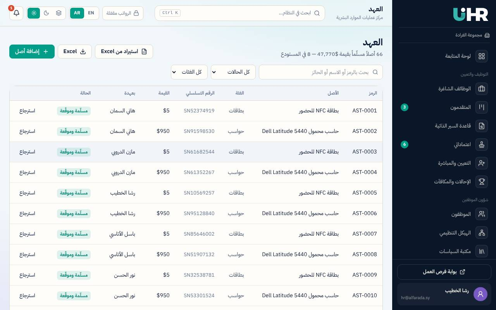
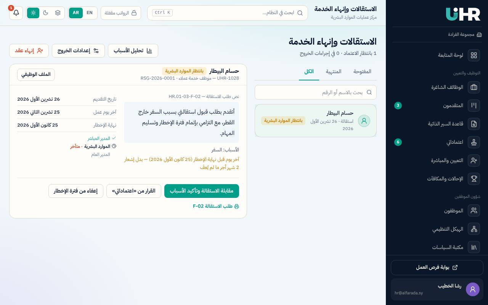
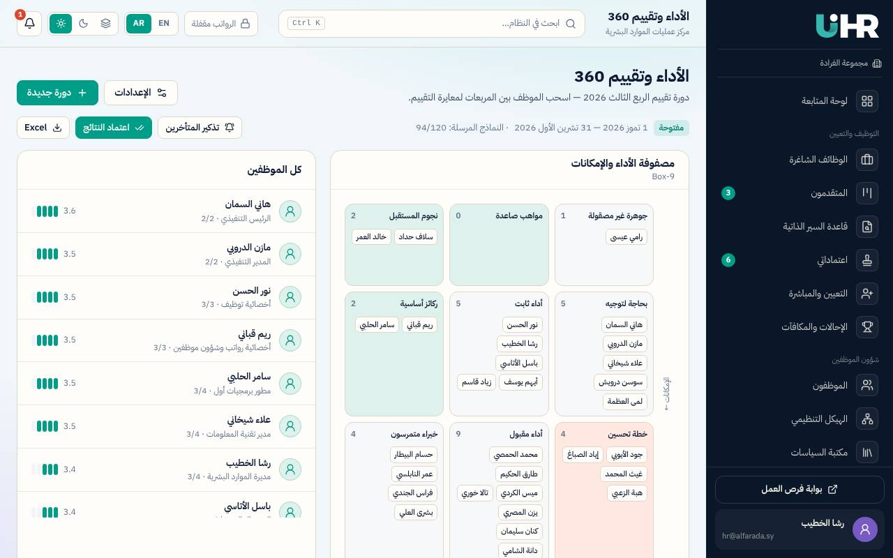
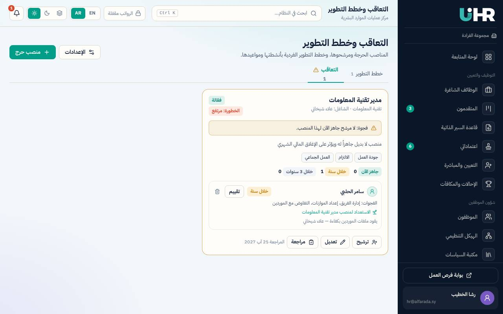
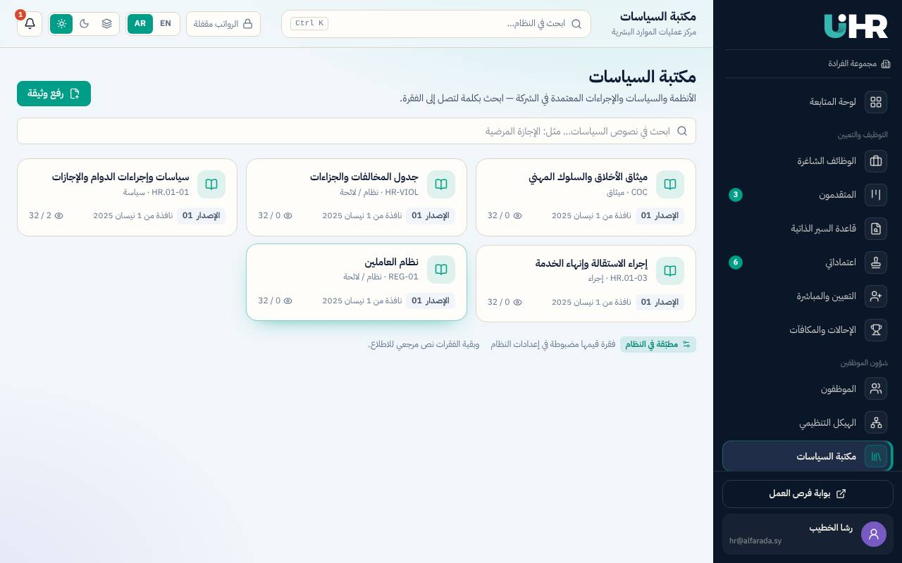

«العهدة» هي كل أصل تملكه الشركة ويُسلَّم لموظف ليعمل به: حاسوب، جوال، مفتاح، بطاقة دخول، مركبة… سجل العهد يجيب في أي لحظة عن ثلاثة أسئلة: ما الذي تملكه الشركة؟ أين هو الآن؟ ومن المسؤول عنه؟ الصفحة في /hr/custody.

وهناك حالتان خارج هذا المسار: في الصيانة (الأصل لا يُسلَّم حتى يعود صالحاً) ومستبعد (خرج من الخدمة نهائياً ويبقى في السجل للتاريخ).
| العنصر | معناه | ملاحظات |
|---|---|---|
| البحث | «بحث بالرمز أو الاسم أو الحائز»: يبحث في رمز الأصل واسمه ورقمه التسلسلي واسم الموظف الذي يحمله. | الفلاتر تُحفظ في رابط الصفحة، فيمكن مشاركة الرابط بنفس النتيجة. |
| الحالة | كل الحالات، مسلّمة، بانتظار التوقيع، في المستودع، في الصيانة، مستبعد. | |
| الفئة | نوع الأصل (أجهزة، أثاث، مركبات…). | الفئات من إعدادات الشركة. |
| تصدير Excel | ينزّل السجل بالفلاتر الحالية. | يحتاج صلاحية التصدير، ويُسجَّل في سجل التدقيق. |
| الحقل | معناه | ملاحظات |
|---|---|---|
| الرمز | رقم الأصل في الشركة، مثل AST-0075. | يُعطى تلقائياً ومتسلسلاً عند الإضافة، والبادئة من «بيانات الشركة». |
| اسم الأصل / الاسم بالإنكليزية | وصف واضح للأصل، مثل «حاسوب محمول Dell Latitude». | |
| الفئة | نوع الأصل. | إلزامي. |
| الرقم التسلسلي | الرقم المطبوع من الشركة المصنّعة. | لا يتكرر في الشركة؛ النظام يرفض رقماً مستخدماً لأصل آخر. |
| القيمة التقديرية ($) | قيمة الأصل بالدولار. | تُقتطع من مخالصة الموظف إن غادر دون إعادته. |
| تاريخ الشراء | متى اشترته الشركة. | اختياري. |
| الحالة الفنية | سليمة، مقبولة، تالفة. | تُحدَّث عند كل استرجاع. |
| ملاحظات | أي معلومة إضافية (مواصفات، ملحقات). |
في درج الأصل يظهر «سجل الحركة»: كل ما حدث له بالترتيب — أُضيف للمستودع، سُلّم، وقّع الموظف الاستلام، أُعيد، أُحيل للصيانة، استُبعد، عُدّلت بياناته — مع التاريخ ومن قام به والحالة والملاحظة. هذا السجل لا يُعدَّل ولا يُحذف.
لإدخال عهد كثيرة دفعة واحدة (مثلاً عند بدء العمل بالنظام):
تطبّق هذه الوحدة لائحة الجزاءات وفق قانون العمل وجدول المخالفات المعتمد في الشركة: لكل مخالفة جزاء محدد يتدرج مع تكرارها، ولا يُوقَّع جزاء قبل سماع أقوال العامل وتسجيل محضر التحقيق، ولا بعد انقضاء مهلة القرار. الصفحة للموارد البشرية /hr/discipline، وللموظف «إنذاراتي وشكاواي» /me/discipline.
يحتوي الدليل مخالفات الشركة مقسمة إلى ثلاث مجموعات: مواعيد العمل (التأخر، الغياب، الخروج المبكر…)، نظام العمل (الإهمال، مخالفة التعليمات…)، سلوك العامل (الإساءة، السلوك غير اللائق…). لكل مخالفة رقم ضمن مجموعتها، ومادة القانون التي تستند إليها، وجزاء لكل مرة: أول مرة، ثاني مرة، ثالث مرة، رابع مرة (أو جزاء واحد). يُعدَّل الدليل من /hr/settings/violations، ويمكن إرجاعه إلى جدول الشركة الأصلي بزر القيم الافتراضية.
| نوع الجزاء | معناه | ملاحظات |
|---|---|---|
| تنبيه | لفت نظر للموظف. | أخف الجزاءات. |
| إنذار كتابي | إنذار رسمي مكتوب (النموذج F-01). | يوقّع الموظف باستلامه. |
| حسم أجر | حسم ربع يوم، نصف يوم، يوم، يومين… من الأجر. | يدخل الكشف الشهري ضمن سقف الحسم الشهري. |
| تأخير موعد استحقاق علاوة الترفيع حتى سنة | تأجيل العلاوة الدورية. | يحتاج اعتماد المدير العام. |
| الحرمان من علاوة الترفيع الدوري | إسقاط العلاوة الدورية. | يحتاج اعتماد المدير العام. |
| الفصل من الخدمة وفق أحكام القانون | إنهاء الخدمة. | يحتاج اعتماد المدير العام، ثم تُفتح إجراءات إنهاء العقد F-03. |
| الغرامة المحددة بالمرسوم 62 لعام 2009 | غرامة قانونية محددة. | |
| يُمنع من الدخول ويُعتبر غائباً | للتأخر ساعة أو أكثر مثلاً. |
ونهايتان أخريان: حُفظت بلا جزاء (لم تثبت المخالفة أو قُبل العذر — بسبب مكتوب)، وانقضت المهلة (مرّت مهلة القرار دون جزاء، فتُغلق تلقائياً).
| التبويب | ما يعرضه | ملاحظات |
|---|---|---|
| الحالات المفتوحة | الحالات التي لم يصدر قرارها، مع عدد الأيام المتبقية للمهلة. | المهلة تظهر بالأحمر حين يبقى 3 أيام أو أقل. |
| اقتراحات الحضور | موظفون تجاوزوا حد التأخر أو الغياب أو الخروج المبكر هذا الشهر، مع الأيام والمخالفة المقترحة ودرجتها. | «فتح حالة» يفتحها مباشرة. لا يتكرر الاقتراح إن فُتحت حالة لنفس المخالفة هذا الشهر. |
| القرارات | الحالات التي صدر قرارها أو حُفظت. | |
| السجل الكامل | كل الحالات. | |
| الشكاوى | شكاوى الموظفين F-02. | للموارد البشرية بنطاق «الكل» فقط؛ المديرون لا يرونها. |
أو «حفظ بلا جزاء» مع «سبب الحفظ»، فتُغلق الحالة «حُفظت بلا جزاء».
تُضبط في /hr/settings/policies بطاقة «قواعد المخالفات»، بتاريخ نفاذ:
| القاعدة | معناها | الافتراضي |
|---|---|---|
| سقف الحسم بالشهر | أقصى أيام أجر تُحسم من الموظف بالجزاءات في شهر واحد. ما يزيد يُخفَّض ويظهر «خُفّض لسقف الحسم الشهري». | 5 أيام |
| مهلة القرار من اكتشاف المخالفة | بعدها لا يجوز الجزاء، وتُغلق الحالة «انقضت المهلة». | 15 يوماً |
| مدة احتساب التكرار | المخالفة نفسها خلال هذه المدة تُعد تكراراً وترفع الدرجة. | 6 أشهر |
| صلاحية الموارد البشرية حتى حسم | ما فوقها يحتاج المدير العام. | 3 أيام |
| الاقتراح الآلي من الحضور خلال الشهر | عدد مرات التأخر غير المبرر، وأيام الغياب غير المبرر، ومرات الخروج المبكر التي يبدأ عندها الاقتراح. | 3 · 1 · 2 |
أيام الحسم تظهر في «الكشف الشهري» للشهر المحدد في القرار، ويُحسب مبلغها بأجر اليوم.
بعد صدور القرار تُطبع وثيقة «الإنذار الكتابي F-01» من الحالة، وتحتوي بيانات الموظف ومنصبه وقسمه وتاريخ المخالفة والأسباب والجزاء، و«ملاحظة: نسخة إلى ملف الموظف». ويصل للموظف طلب «إقرار استلام الموظف — التوقيع» في بوابته، فيوقّع إلكترونياً وتصبح الحالة «أقرّ الموظف بالاستلام». قبل ذلك تظهر «بانتظار إقرار الموظف».
تتبع هذه الوحدة إجراء الشركة HR.01-03: من طلب الاستقالة أو قرار إنهاء العقد، مروراً بالاعتمادات والمقابلة وتسليم المهام والعهدة، حتى إبراء الذمة والمخالصة النهائية. صفحة الموارد البشرية /hr/offboarding، وصفحة الموظف «الاستقالة» /me/resignation.

ونهايتان أخريان: مرفوض (يعود الموظف إلى حالته السابقة) ومسحوبة للاستقالة أو ملغى لإنهاء العقد. ترتيب المستويات هو سلسلة «الاستقالة» أو «إنهاء العقد» في إعدادات سلاسل الاعتماد (افتراضياً: المدير المباشر ← الموارد البشرية ← المدير العام)، وتُتخذ القرارات من «اعتماداتي».
| العنصر | معناه | ملاحظات |
|---|---|---|
| آخر يوم عمل | التاريخ الذي يريد الموظف أن تنتهي فيه خدمته. | اليوم أو بعده. إن كان قبل نهاية مهلة الإخطار يظهر تنبيه. |
| أسباب الاستقالة | اختيار واحد أو أكثر: فرصة عمل أخرى، السفر، ظروف عائلية أو شخصية، أسباب صحية أو دراسية، الراتب أو شروط العمل، أسباب أخرى. | «أسباب أخرى» تحتاج كتابة «ما هي الأسباب الأخرى». القائمة قابلة للتعديل. |
| نص الطلب | نص الاستقالة الرسمي. | يُطبع على النموذج HR.01-03-F-02. |
| استبيان الاستقالة (اختياري) | أسئلة تساعد الشركة على التحسين: لماذا تترك العمل؟ ما الذي كان سيجعلك تبقى؟ ما أكثر وأقل ما أحببته؟ تقييم المشرف وبيئة العمل والتدريب… | لا يراه المدير المباشر. |
«مقابلة الاستقالة وتأكيد الأسباب»: يسجل مسؤول الموارد البشرية «الأسباب المؤكدة» بعد الحديث مع الموظف، و«محاولة الاحتفاظ بالموظف»، و«ملاحظات المقابلة»، و«التوصية». لا يمكن اعتماد مستوى الموارد البشرية قبل حفظ المقابلة.
«إعفاء من فترة الإخطار» (للمدير المباشر أو الموارد البشرية): يُكتب «سبب الإعفاء»، ويمكن تحديد آخر يوم عمل أبكر. عندها لا يُقتطع بدل الإشعار، ويُبلَّغ الموظف.
جدول بالمهام التي بين يدي الموظف (حتى 20 مهمة)، يُدخله الموظف المستقيل (أو الموارد البشرية) ويسمّي المستلم. لكل مهمة: الحالة (منجز، قيد التنفيذ، مؤجل)، الملفات ونوعها (ورقي، إلكتروني)، المتبقي، ومكان الحفظ / الرابط.
التواقيع الأربعة بالترتيب، وأي تعديل على الجدول يعيد التواقيع من البداية. المستلم يجد المهام في «مهام تستلمها من زملاء».
«تسليم العهدة F-07» مقسم إلى جهات، لكل جهة مسؤول يؤشر بنودها (تم / لا يوجد / يوجد — بالمبلغ) ويوقّع:
| الجهة | بنودها الافتراضية | ملاحظات |
|---|---|---|
| إدارة الموظف | تسليم المهام حسب F-05، الأختام. | بند تسليم المهام يُحسب تلقائياً من F-05. |
| تقانة المعلومات | استلام الأجهزة وحالتها، توقيف الحسابات، نسخ البيانات. | يوقّعها مدير النظام. |
| القانوني / التنفيذي | التفويضات والوكالات. | |
| الشؤون الإدارية | كل الأصول من سجل العهد، خط الجوال، خط الإنترنت، المركبة ومستنداتها، المفاتيح. | بند الأصول يُحسب تلقائياً من سجل العهد ويعرض ما لم يُسترجع. |
| المالية | سلف العمل، سلف شخصية، قروض، كفالة موظف آخر. | بنود بمبلغ يُقتطع في المخالصة. |
| الموارد البشرية | الإجازات المستحقة والمستخدمة والمتبقية، بطاقات التأمين الصحي، البطاقة التعريفية… | بند الإجازات يُحسب تلقائياً من الرصيد. |
حين توقّع كل الجهات يصدر رقم «براءة الذمة F-04» تلقائياً، وتُطبع «إلى من يهمه الأمر». الجهات وبنودها قابلة للتعديل من /hr/settings/exit.
تُجرى «في آخر يوم عمل أو الذي قبله، بدون حضور المدير»: إجابات أسئلة المقابلة، «تقييم الموظف لتجربة العمل (1–5)»، هل «يرغب بالعودة مستقبلاً»، «مؤهل لإعادة التعيين»، «رُوجعت شروط عدم المنافسة والسرية»، «وُضّحت للموظف حقوقه القانونية». إلزامية لإغلاق الاستقالة.
| البند | كيف يُحسب | ملاحظات |
|---|---|---|
| الأجر اليومي | الراتب ÷ أيام الشهر (30 افتراضياً). | |
| أجر الشهر الأخير | أيام الشهر الأخير حتى آخر يوم عمل × الأجر اليومي. | من تاريخ المباشرة إن بدأ في نفس الشهر. |
| بدل رصيد الإجازات | الأيام المتبقية في الرصيد × الأجر اليومي. | |
| إعانة الوفاة | عند انتهاء الخدمة بالوفاة: راتب شهرين (افتراضياً) + بقية الشهر. | |
| اقتطاع عهد غير مسترجعة | قيمة الأصول التي ما زالت بعهدته. | (−) |
| سلف مفتوحة | السلف التي لم تُحسم بعد. | (−) |
| ذمم المالية (F-07) | المبالغ التي أدخلتها المالية في براءة الذمة. | (−) |
| بدل الإشعار | إن لم تُكمل مهلة الإخطار ولم يُعفَ: شهران من الراتب افتراضياً. | (−) |
| صافي المستحقات | المجموع. | حساب تقديري يُراجع من الإدارة المالية. |
إن كان للموظف المغادر أدوار إدارية في النظام (مدير، موارد بشرية، مالية…)، يجب «نقل الحساب للبديل» قبل الإغلاق: يختار مدير النظام موظفاً يأخذ «نقل الأدوار والصلاحيات»، ويمكن إعطاؤه «كلمة سر مؤقتة جديدة» تظهر مرة واحدة. يُعطَّل الحساب القديم عند الإغلاق.
عند الإغلاق: تصبح حالة الموظف «منتهي الخدمة» بتاريخ انتهاء، وتُلغى طلباته المعلقة، ويُعطَّل حسابه، ويُعلم كل الموظفين بانتهاء الخدمة. ثم تظهر:
تقرير «تحليل الأسباب» لشهر محدد: أكثر الأسباب، والتوزيع «حسب الإدارة»، و«متوسط التقييم» لتجربة العمل، وعدد «مؤهلون لإعادة التعيين».
كل القيم (مهلة الإخطار 60 يوماً، مهلة القرار 30 يوماً، بدل الإشعار، إعانة الوفاة، مدة التأمينات) تُضبط في بطاقة «قواعد الخروج» في /hr/settings/policies، والقوائم والأسئلة والجهات في «إعدادات الخروج».
يشجع النظام الموظفين على ترشيح أشخاص مناسبين للوظائف الشاغرة: يشارك الموظف رابط الوظيفة، ومن يتقدم عبره يُحسب «إحالة» له، ويكسب نقاطاً كلما تقدّم المرشح في مراحل التوظيف، ثم يستبدل النقاط بمكافآت من المتجر.
| المرحلة | النقاط الافتراضية | متى |
|---|---|---|
| 1 — الفرز | 10 | حين يصل المرشح لمرحلة الفرز. |
| 2 — المقابلات | 20 | المقابلة أو التقييم الفني أو العرض. |
| 3 — التعيين | 30 | حين يُعيَّن. |
| 4 — التثبيت | 40 | حين يُثبَّت بعد فترة التجربة. |
تُمنح كل مرحلة مرة واحدة، وتتضاعف للوظائف «صعبة الإشغال» (×2 افتراضياً). إن رُفض المرشح لا تُضاف نقاط بعد ذلك. القيم من «قواعد التوظيف والمطابقة». حالات الإحالة: مُشارك ← تقدّم ← قيد المعالجة ← عُيّن ← كوفئ.
«الاستقطاب الداخلي — ترشيح نفسي»: يتقدم الموظف لوظيفة شاغرة داخل الشركة (نقل أو ترقية). يكتب «أسباب ودوافع التقدم لهذه الوظيفة»، ويُرسل الطلب لمديره المباشر.
يمكن «سحب الطلب الداخلي» قبل اعتماده.
في /hr/referrals: لوحة المتصدرين ومسار «من الرابط إلى التعيين»، و«روابط الإحالة»، و«طلبات الاستبدال» (اعتماد يسحب من المخزون، أو «رفض وإعادة النقاط» بسبب)، و«المتجر» لإضافة المكافآت وتعديلها ووقفها.
لوحة إعلانات الشركة الرسمية. الموارد البشرية تنشر من /hr/announcements، والموظف يقرأ في «إعلانات الشركة» /me/news، وآخر ثلاثة إعلانات تظهر في رئيسية بوابته.
| الحقل | معناه | ملاحظات |
|---|---|---|
| العنوان والنص بالعربية والإنكليزية | محتوى الإعلان. | |
| الجمهور | كل الموظفين، أو إدارة محددة. | إعلان الإدارة لا يراه غير موظفيها، ولا مرفقاته. |
| صورة (jpg/png/webp) | صورة تظهر مع الإعلان. | بحد أقصى للحجم (10 MB افتراضياً). |
| مرفق (pdf/docx/xlsx) | ملف للتنزيل. | |
| موعد النشر (فارغ = الآن) | لجدولة الإعلان. | يظهر «مجدول» حتى موعده. |
| ينتهي في (اختياري) | بعده يُؤرشف تلقائياً «منتهٍ». |
تقييم 360 يعني أن الموظف يُقيَّم من ثلاث جهات: نفسه، ومديره المباشر، وزملاؤه. تجتمع التقييمات في درجة واحدة، ويوضع كل موظف في «مصفوفة الأداء والإمكانات» (9-Box). صفحة الموارد البشرية /hr/performance.

| الحقل | معناه | ملاحظات |
|---|---|---|
| الاسم بالعربية والإنكليزية | مثل «دورة تقييم الربع الثالث 2026». | |
| البداية / حتى / آخر موعد للنماذج | فترة التقييم وموعد تسليم النماذج. | بعد الموعد يظهر المتأخرون في «متأخرون». |
| النطاق | كل الموظفين أو إدارة واحدة. | لا تُفتح دورتان معاً لنفس النطاق. |
«فتح الدورة وإرسال النماذج» ينشئ لكل موظف مؤهل (ليس قيد المباشرة ولا منتهي الخدمة): نموذجاً ذاتياً، ونموذجاً لمديره المباشر، ونماذج لعدد من زملائه في نفس الإدارة (3 افتراضياً، يُختارون بالتناوب)، ويصل لكل مقيّم إشعار.
| النموذج | من يملؤه | ملاحظات |
|---|---|---|
| ذاتي («تقييمي الذاتي») | الموظف نفسه. | |
| المدير («بصفتك المدير المباشر») | المدير المباشر. | فيه أيضاً «الإمكانات المستقبلية» (منخفضة، متوسطة، مرتفعة) — إلزامية. |
| الزملاء («بصفتك زميلاً») | زملاء من نفس الإدارة. | يظهر للموظف مجمّعاً وبلا أسماء. |
كل نموذج يقيّم كفاءات الشركة (من إعدادات الأداء) بأزرار من 1 إلى 5 (المقياس قابل للتعديل)، مع ملاحظة اختيارية. يمكن «حفظ مسودة» ثم «إرسال» بتأكيد؛ بعد الإرسال لا يمكن التعديل.
تجمع محورين: الأداء (من الدرجة) والإمكانات (من تقييم المدير)، كل منهما منخفض/متوسط/مرتفع، فتنتج تسع خانات:
| الخانة | الأداء × الإمكانات | ما تعنيه |
|---|---|---|
| نجوم المستقبل | مرتفع × مرتفعة | الأقرب للترقية وخطط التعاقب. |
| مواهب صاعدة | متوسط × مرتفعة | إمكانات كبيرة تحتاج تطويراً. |
| جوهرة غير مصقولة | منخفض × مرتفعة | قدرة عالية لم تظهر في الأداء بعد. |
| خبراء متمرسون | مرتفع × منخفضة | أداء ممتاز في مكانهم الحالي. |
| ركائز أساسية | مرتفع × متوسطة | عماد الفريق. |
| أداء ثابت | متوسط × متوسطة | أداء جيد ومستقر. |
| أداء مقبول | متوسط × منخفضة | يؤدي المطلوب. |
| بحاجة لتوجيه | منخفض × متوسطة | يحتاج متابعة وتوجيهاً. |
| خطة تحسين | منخفض × منخفضة | يحتاج خطة تحسين واضحة. |
المعايرة: «اسحب الموظف بين المربعات لمعايرة التقييم» — حين ترى لجنة الموارد البشرية أن موضع موظف لا يعكس الواقع، تسحبه لخانة أخرى مع «تصنيف المعايرة» وملاحظة. يظهر عليه «معايرة»، ويبقى موضعه حتى لو أُعيد حساب الدرجة.
«تصدير Excel» لنتائج الدورة. الأوزان والمقياس وعدد الزملاء والحدود وجدول المكافآت والكفاءات في /hr/settings/performance، مع معاينة قبل الحفظ؛ والحفظ يعيد حساب الدورات المفتوحة.
«تحليلات الموارد البشرية» في /hr/analytics: قراءات مأخوذة مباشرة من بيانات النظام — بدون إدخال يدوي.
| التبويب / التقرير | ما يعرضه | ملاحظات |
|---|---|---|
| القوى العاملة — سنوات الخدمة | عدد الموظفين حسب مدة خدمتهم. | |
| كتلة الرواتب حسب الإدارة | مجموع الرواتب لكل إدارة. | لمن يملك صلاحية الرواتب وبعد التحقق والإذن؛ وإلا يظهر «الموظفون حسب الإدارة» بالأعداد. |
| الحضور — خريطة الحضور حسب الإدارة | لكل إدارة وكل يوم من آخر 10 أيام عمل: نسبة الحضور والتأخر. | مرّر فوق الخلية للتفاصيل. |
| أنواع الطلبات | توزيع الطلبات حسب نوعها. | |
| التوظيف — معدل التحويل بين المراحل | عدد المتقدمين في كل مرحلة والمرفوضين. | يكشف أين يتسرب المتقدمون. |
| الأداء — توزيع 9-Box | عدد الموظفين في كل خانة لآخر دورة. |
«تصدير Excel» ينزّل ملفاً بورقة لكل تقرير.
صفحة /hr/development فيها تبويبان: «خطط التطوير» و«التعاقب».
المنصب الحرج منصب يضر شغوره بالشركة (مدير إدارة، خبير وحيد…). خطة التعاقب تحدد من يمكنه شغله إن غادر صاحبه.

| الحقل | معناه | ملاحظات |
|---|---|---|
| المنصب بالعربية والإنكليزية | اسم المنصب. | |
| الإدارة / شاغل المنصب حالياً | أين المنصب ومن فيه الآن. | الشاغل لا يُرشَّح لمنصبه. |
| خطورة شغور المنصب | منخفض، متوسط، مرتفع. | |
| سبب اعتباره حرجاً | لماذا هذا المنصب مهم. | |
| الكفاءات المطلوبة | من قائمة كفاءات الشركة. |
خطة لتطوير موظف محدد: ما ينقصه (الفجوات)، وما يجب أن يحققه (الأهداف)، وكيف (الأنشطة).
| الحقل | معناه | ملاحظات |
|---|---|---|
| الموظف / عنوان الخطة | لمن الخطة وموضوعها. | لا يضع أحد خطة لنفسه. |
| الفجوات | ما يحتاج الموظف لتطويره. | |
| الأهداف | من 1 إلى 10 أهداف، تؤشر حين تتحقق. | |
| الأنشطة (مسؤول وموعد) | حتى 20 نشاطاً. لكل نشاط: النوع (دورة، إرشاد، مشروع، قراءة، تدوير وظيفي، أخرى)، المسؤول، والموعد. | المسؤول قد يكون الموظف نفسه أو مرشداً. |
مقياس الجاهزية ومدد المراجعة تُضبط من «إعدادات التعاقب والتطوير» في الصفحة نفسها.
المكان الرسمي لأنظمة الشركة وسياساتها وإجراءاتها المعتمدة: نظام العاملين، سياسة الدوام والإجازات HR.01-01، إجراء الاستقالة HR.01-03، جدول المخالفات، ميثاق السلوك… الموارد البشرية في /hr/policies، والموظف في «سياسات الشركة» /me/policies.

لكل وثيقة: العنوان، الرمز (مثل HR.01-01)، النوع (سياسة، إجراء، نظام / لائحة، ميثاق، أخرى)، رقم الإصدار، وتاريخ النفاذ. الموظف يرى «جديدة عليك» إن لم يفتح الإصدار الحالي بعد، و«اطّلعت» بعد فتحه. والموارد البشرية ترى عدد من اطّلعوا من أصل عدد الموظفين.
اكتب كلمة أو أكثر في «ابحث في نصوص السياسات…» فتظهر الفقرات التي تحتوي كل الكلمات، مع اسم الوثيقة ورقم الفقرة والكلمات مميزة. الضغط على النتيجة يفتح الوثيقة على الفقرة نفسها. البحث لا يتأثر بالهمزات والتشكيل والتاء المربوطة: «الاجازه المرضيه» تجد «الإجازة المرضيّة». والموارد البشرية يمكنها توسيعه ليشمل الإصدارات المؤرشفة.
يربط مسؤول الموارد البشرية الفقرة بالإعداد عبر زر الربط بجانبها («ربط الفقرة بإعداد»): يختار الإعداد (الوردية، أيام العمل، العطل، جدول حسم التأخير، العمل الإضافي، الإجازة السنوية، قواعد الإجازات، أنواع الإجازات، الكشف الشهري، قواعد الجزاءات، دليل المخالفات، الخروج، سلاسل الاعتماد، التوظيف، التقييم، المستندات، حماية الرواتب…) ويضيف ملاحظة. ويمكن إلغاء الربط.